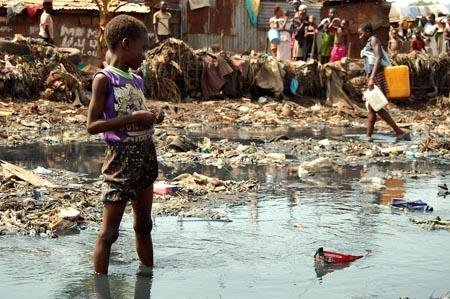

In the heart of Kroo Bay, one of Freetown's most challenging slums, children navigate through flooded streets and makeshift homes every single day. The image you see tells a story of survival - children wading through polluted waters, surrounded by poverty, yet carrying an unbreakable spirit.
Meet Ibrahim, one of the many children growing up in these conditions. Each morning, he steps through the same contaminated water you see in this photo - not to play, but to survive. But when the sun sets and our SL Mariners FC coaches arrive with footballs under their arms, something magical happens.
Those same feet that walk through dirty water to collect scrap metal suddenly learn to control a ball with precision. Those same hands that search through garbage discover the power of teamwork. The flooded streets that separate their homes become the boundaries of their dreams.
Football is more than a game here - it's an escape, a lifeline, and a pathway to a better future. Through our youth academy program in Kroo Bay and surrounding slums, we provide:
Your donation changes narratives. It transforms a child who wades through slum waters into a young athlete with goals, discipline, and hope. It turns a desperate environment into a training ground for champions - both on and off the pitch.

"In the slum, I saw only darkness. But football showed me I can score goals in life too."
Age 12, Kroo Bay Youth Academy
Ibrahim joins our academy every day after school. Despite walking through flooded streets daily, his determination never fades. He dreams of becoming a professional footballer and helping his family escape poverty. Through our program, Ibrahim has improved his reading skills, learned teamwork, and discovered his potential.
Your support keeps Ibrahim's dream alive. Every donation helps provide training equipment, educational materials, and nutritious meals for children like Ibrahim who refuse to let their circumstances define their future.
Every child in Kroo Bay deserves more than survival - they deserve a chance to thrive. Through football, we're not just building players; we're building leaders, dreamers, and change-makers who will transform Sierra Leone's future.